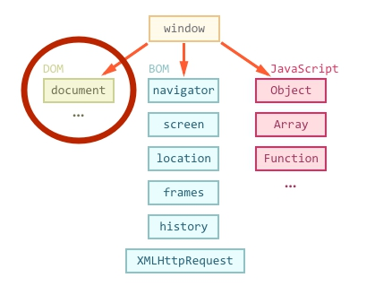
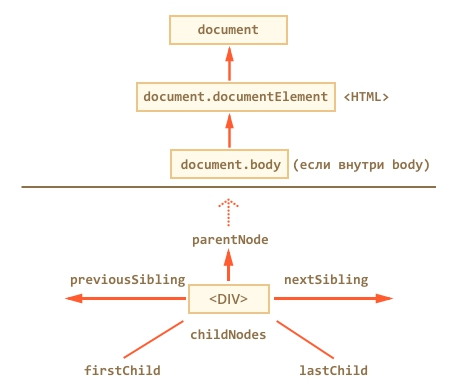
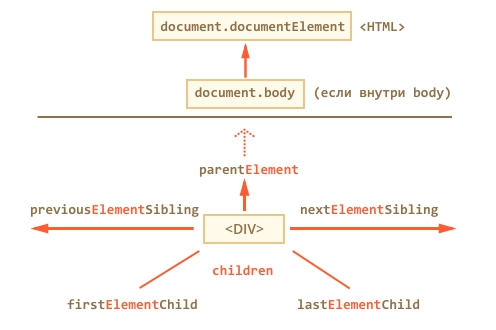
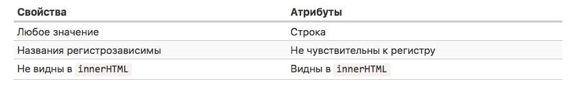

Основной инструмент работы и динамических изменений на странице.
Глобальный объект document даёт возможность взаимодействовать с содержимым страницы – читать информацию из HTML, создавать и изменять элементы.
Дерево DOM
Согласно DOM-модели, документ является иерархией - деревом.
Каждый HTML-тег образует узел дерева.
Вложенные теги становятся дочерними узлами.
Все элементы страницы, включая теги, текст, комментарии, являются узлами DOM.
У элементов DOM есть свойства и методы, которые позволяют изменять их.
Создать документ с 3 элементами div, а у каждого элемента еще по 2 дочерних элемента (должны присутствовать p, ul, li, комментарии и текст).
Ознакомиться с DOM в браузере открыв инструменты разработчика.
Навигация по DOM
Доступ к DOM начинается с объекта document. Из него можно добраться до любых узлов или элементов.


Таблицы
table.rows – коллекция строк TR таблицы.
table.caption/tHead/tFoot – ссылки на элементы таблицы CAPTION, THEAD, TFOOT.
table.tBodies – коллекция элементов таблицы TBODY, по спецификации их может быть несколько.
tbody.rows – коллекция строк TR секции. (одинаково для THEAD/TFOOT/TBODY)
tr.cells – коллекция ячеек TD/TH
tr.sectionRowIndex – номер строки в текущей секции THEAD/TBODY
tr.rowIndex – номер строки в таблице
td.cellIndex – номер ячейки в строке
Важно!
Список детей – только для чтения!
DOM-коллекции, такие как childNodes и другие, которые мы увидим далее, не являются JavaScript-массивами.
В мире DOM в качестве значения, обозначающего «нет такого элемента» или «узел не найден», используется не undefined, а null.
Для документа созданного ранее написать код, который: получит элемент HEAD, получит UL, получит все дочерние элементы P, получит соседние узлы комментариев.
Поисковые методы
getElement* и querySelector*
document.getElementById или просто id
document.getElementsByName
document.getElementsByTagName (можно получить всех потомков, передав звездочку '*' вместо тега)
document.getElementsByClassName
elem.querySelectorAll
elem.querySelector
matches: elem.matches(css) ничего не ищет, а проверяет, удовлетворяет ли elem селектору css. Он возвращает true либо false.
closest: elem.closest(css) ищет ближайший элемент выше по иерархии DOM, подходящий под селектор.
Важно!
Не забываем про букву "s"!
Возвращается коллекция, а не элемент
Псевдо-класс тоже работает: document.querySelectorAll(':hover')
Для проверки, является ли один узел предком другого, достаточно метода nodeA.contains(nodeB).
В документе table.html найти (получить в переменную):
Все элементы label внутри таблицы. Должно быть 3 элемента.
Первую ячейку таблицы (со словом "Возраст").
Вторую форму в документе.
Форму с именем search, без использования её позиции в документе.
Элемент input в форме с именем search. Если их несколько, то нужен первый.
Элемент с именем info[0], без точного знания его позиции в документе.
Элемент с именем info[0], внутри формы с именем search-person.
Атрибуты и свойства DOM
Свойство – это то, что находится внутри DOM-объекта, как и любой объект в JavaScript, он может содержать пользовательские свойства и методы.
Атрибуты – это то, что написано в HTML. Доступ к атрибутам осуществляется при помощи стандартных методов:
elem.hasAttribute(name) – проверяет наличие атрибута
elem.getAttribute(name) – получает значение атрибута
elem.setAttribute(name, value)
elem.removeAttribute(name)
Все атрибуты элемента можно получить с помощью свойства elem.attributes

Cвойства innerHtml и outerHtml, и другие
InnerHtml позволяет получить HTML-содержимое элемента в виде строки. В innerHTML можно и читать и писать.
Свойство outerHTML содержит HTML элемента целиком. Изменить outerHTML элемента невозможно.
Значение, возвращаемое innerHTML – всегда валидный HTML-код.
Добавление innerHTML+= осуществляет перезапись.
Если в innerHTML есть тег script – он не будет выполнен.
OuterHTML доступно на запись, но при этом элемент не меняется, а заменяется на новый.
Свойство textContent содержит только текст внутри элемента, за вычетом всех <тегов>.
Скрыть элемент можно с помощью установки свойства hidden в true или с помощью атрибута.
Узлы DOM также имеют другие свойства, в зависимости от тега. Например, у INPUT есть свойства value и checked, а у A есть href и т.д.
Свойство classlist
Свойство classList – это объект для работы с классами.
Методы:
elem.classList.contains("class") – возвращает true/false, в зависимости от того, есть ли у элемента класс class.
elem.classList.add/remove("class") – добавляет/удаляет класс class
elem.classList.toggle("class") – если класса class нет, добавляет его, если есть – удаляет.
Нестандартные атрибуты
У каждого элемента есть некоторый набор стандартных свойств, например для < a > это будут href, name, а для < img > это будут src, alt, и так далее.
Точный набор свойств описан в стандарте, обычно мы более-менее представляем, если пользуемся HTML, какие свойства могут быть, а какие – нет.
Нестандартные атрибуты иногда используют для CSS.
Свойство dataset
С помощью нестандартных атрибутов можно привязать к элементу данные, которые будут доступны в JavaScript.
Как правило, это делается при помощи атрибутов с названиями, начинающимися на data-, например:
< div id="elem" data-about="Poem" data-author="Unknown">
Когда я сплю, я вижу зеленую воду.
< /div>
При этом во всех браузерах, кроме IE10-, к таким атрибутам можно обратиться не только как к атрибутам, но и как к свойствам, при помощи специального свойства dataset (elem.dataset.about, elem.dataset.userLocation).
Свойство style
Свойство element.style возвращает объект, который дает доступ к стилю элемента на чтение и запись.
Единицы измерения обязательны в style.
Для свойств, названия которых состоят из нескольких слов, используется camalCase (elem.style.backgroundColor).
Полный стиль из getComputedStyle, так как свойство style дает доступ только к той информации, которая хранится в elem.style.
Свойство style мы используем лишь там, где не работают классы.
Напиcать функцию showNotification(options), которая показывает уведомление, пропадающее через 2 сек.
/**
* Показывает уведомление, пропадающее через 2 сек
*
* @param options.top {number} вертикальный отступ, в px
* @param options.right {number} правый отступ, в px
* @param options.сolor {string} строка цвета
* @param options.className {string} CSS-класс
* @param options.html {string} HTML-текст для показа
*/
function showNotification(options) {
// ваш код
}
Добавление и удаление узлов
document.createElement(tag)
document.createTextNode(text)
parentElem.appendChild(elem)
parentElem.insertBefore(elem, nextSibling)
parentElem.removeChild(elem) или elem.remove()
parentElem.replaceChild(newElem, elem)
elem.cloneNode(deep) – клонирует элемент, если deep == true, то со всеми потомками, если false – без потомков.
! Все методы вставки возвращают вставленный узел.
! Все методы вставки автоматически удаляют вставляемый элемент со старого места.